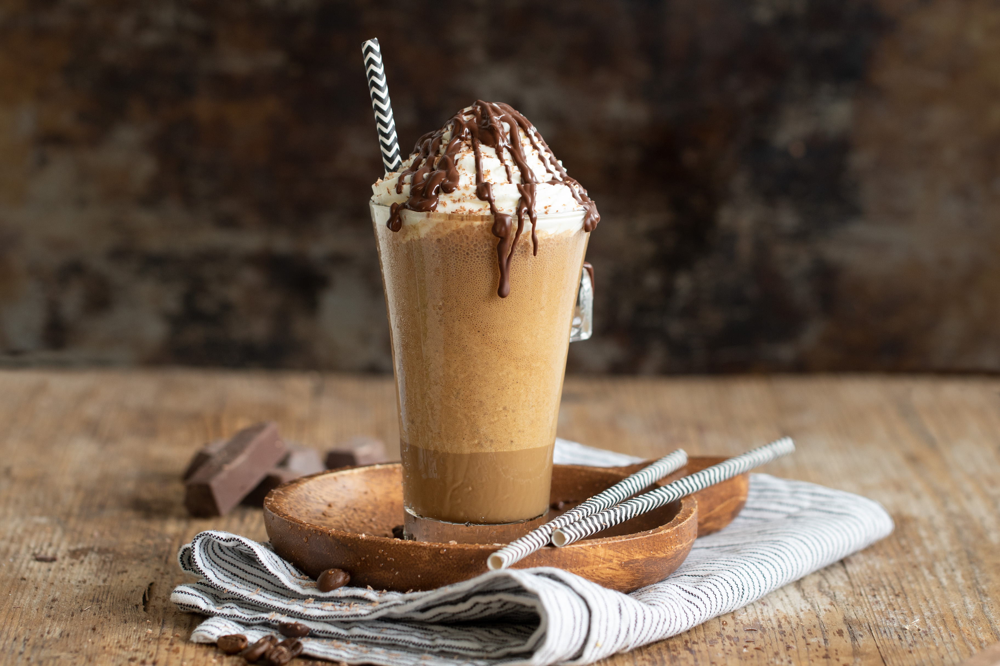

Bienvenida
En Dulce Aroma te damos la bienvenida a un espacio donde el sabor, el aroma y la calidez se encuentran. Aquí, cada taza de café es preparada con pasión y dedicación, acompañada de un ambiente acogedor que te invita a relajarte, disfrutar y compartir. Ya sea que vengas por tu café de la mañana, un momento de tranquilidad o una charla con amigos, estás en el lugar perfecto. ¡Gracias por elegirnos!
Sobre Nosotros
En Dulce Aroma, creemos que una buena taza de café puede transformar cualquier momento del día. Nacimos con la idea de crear un rincón donde las personas puedan sentirse como en casa, rodeadas de buena energía, aromas irresistibles y sabores que reconfortan el alma. Utilizamos granos seleccionados, ingredientes de calidad y recetas hechas con amor para ofrecerte una experiencia única. Somos más que una cafetería: somos un lugar donde nacen recuerdos, conversaciones y sonrisas.
Menú
-
Capuchino
Una deliciosa combinación de espresso, leche vaporizada y una generosa capa de espuma cremosa. Perfecto para quienes disfrutan de un sabor equilibrado entre intensidad y suavidad, ideal para cualquier momento del día. Decorado con un toque de canela o cacao para un aroma irresistible.
Conoce su historia aquí.
-
Frappuccino
Una deliciosa y refrescante bebida a base de café helado, perfecta para los días calurosos. Nuestro Frappuccino combina café espresso con hielo, leche cremosa y un toque de dulzura, todo mezclado hasta alcanzar una textura suave y espumosa. Coronado con crema batida y un toque de sirope de chocolate o caramelo, es la opción ideal para quienes buscan un café frío lleno de sabor y frescura.
Mira como prepararlo en casa.
 -
Café Americano
Sencillo, elegante y lleno de carácter. Nuestro Café Americano es una infusión suave pero intensa que combina el sabor puro del espresso con agua caliente para lograr una taza de café ligera pero profundamente aromática. Ideal para quienes disfrutan del verdadero sabor del café sin añadidos, perfecto para cualquier momento del día.
Descubre mas sobre el café americano

-
Café Espresso
Una bebida intensa y aromática, elaborada con café molido de alta calidad. Su sabor fuerte y cuerpo denso lo convierten en la base perfecta para otras preparaciones. Ideal para quienes disfrutan de un café concentrado y lleno de carácter.
Más sobre el espresso aquí.
-
Café Latte
Una suave combinación de café expreso y leche al vapor, con una fina capa de espuma en la superficie. Perfecto para quienes prefieren un sabor más delicado y cremoso, sin perder el toque característico del buen café.
Conoce más sobre el café latte.